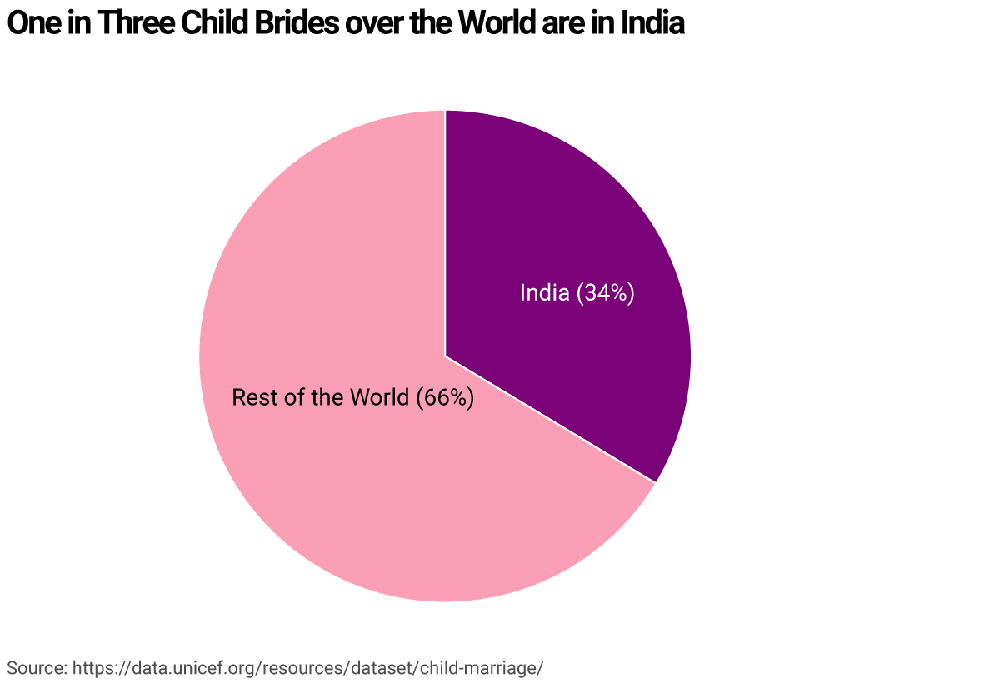
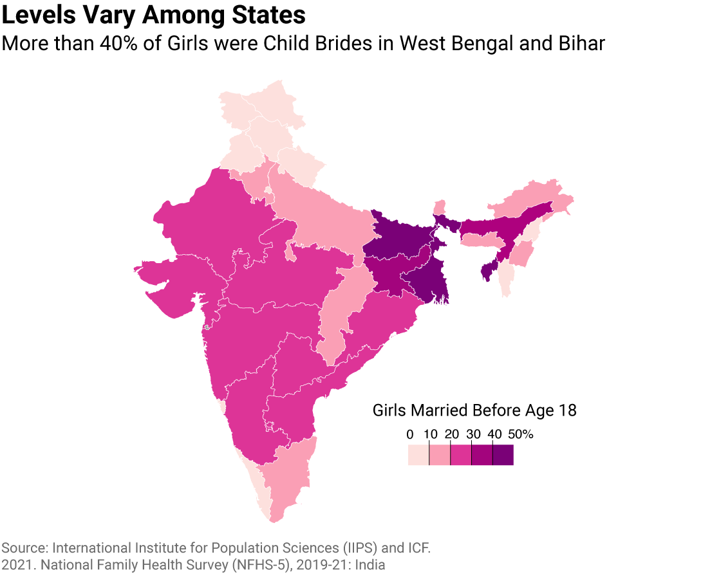
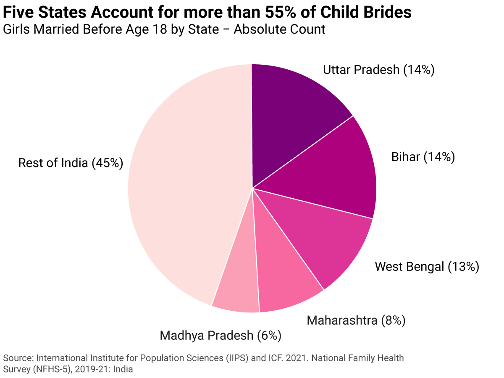

The Issue at Hand
Child marriage remains a pressing human rights issue affecting millions globally, particularly young girls. Despite progress, India still harbors a significant share of the world's child brides. Even though the prevalence rate of child marriage in India currently stands a 23%, the sheer population of the country means that the absolute number will be much higher.

Efforts to combat child marriage in India have evolved over the years, reflecting a growing awareness and targeted action against this social issue. The "Child Marriage Restraint Act" was initially enacted in 1929 and later amended in 1978 to raise the legal age of marriage to 21 for males and 18 for females, setting a legal framework against child marriage. Building on legislative measures, more recent initiatives have focused on both prevention and empowerment. In 1991, India took a significant step towards addressing child marriage by enacting the "Prohibition of Child Marriage Act," which implemented stricter enforcement mechanisms and penalties for those involved in facilitating or conducting child marriages. This Act was a crucial legislative effort to strengthen the existing framework that prohibited child marriages. It aimed to curtail the practice by making it punishable with rigorous imprisonment and fines, thereby deterring the social acceptance of child marriages. Despite all these efforts, if we look at the agregate count, we witness a horrifying reality.
Regional Disparities
Child marriage is notably prevalent in rural settings where traditional practices strongly influence daily life. In regions like central and eastern India—states such as Bihar, West Bengal, and Odisha—the rates of child marriage are alarmingly high. These areas, often characterized by higher levels of poverty and lower educational attainment, see families marrying off daughters at a young age as a means to reduce financial burden or as adherence to age-old customs.
 Significant Progress but a Long Journey Ahead
In 2005, the "Balika Samriddhi Yojana" was launched to provide scholarships to girls and encourage their education as a deterrent against early marriage. The "Beti Bachao, Beti Padhao" campaign, introduced in 2015, further emphasized the importance of educating and empowering girls, alongside robust community outreach to prevent child marriages. NGOs have also played a crucial role; for instance, the "Bell Bajao" campaign by Breakthrough started in 2008, urging men and boys to challenge domestic violence and child marriage in their communities. Meanwhile, international organizations like UNICEF have collaborated on various projects to support these national efforts, focusing on multi-sectoral approaches from the 2000s onward. These chronological steps illustrate a deepening commitment and layered approach to eradicating child marriage in India through legal, educational, and community-driven strategies. Educational and economic factors play pivotal roles in combatting child marriage. A comparison with data from fifteen years ago reveals encouraging trends in risk reduction.

Data Sources
Data for this report is primarily sourced from the National Family and Health Survey by the Government of India, supplemented by global datasets from the World Bank and UNICEF.
National Family and Health Survey Reports: DHS Survey: 2019-2021. DHS Survey: 2005-2006.
Raw Data for these surveys was made available upon request using this link.
UNICEF Reports: